Projects
Other Projects

Autonomous Robot
This is a four wheeled robot that can autonomously retrieve an object by avoiding obstacles in its way. The robot achieves its autonomy with the help of a camera, an IMU sensor and an ultra sonic sensor.Kernel PCA
Kernel PCA can capture the trends in the data that cannot be captured by the standard PCA. With the help of kernels the PCA problem is solved as if were linear in a higher dimension.
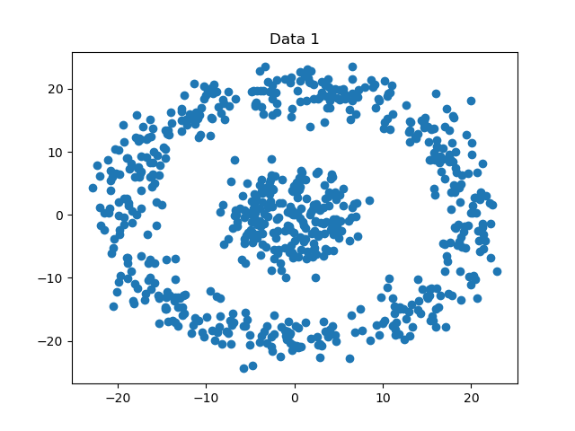
Clustering
This project compares the visual clustering quality obtained by Spectral Clustering and K-means Clustering algorithms.
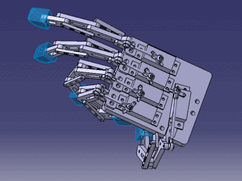
Humanoid Hand
This project is about designing a humanoid hand and conduct force analysis of the fingers.Computer Vision Projects
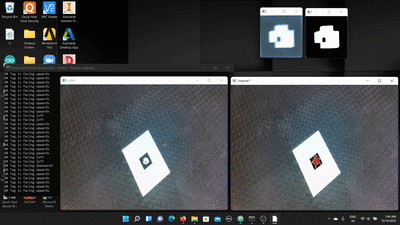
ARtag Detection and 3D cube Imposition
This project includes detection of ARtags decoding their orientation and imposing an image on the tag. Further the pipeline is extended to place a 3D cube on the tag by estimating pose matrix.
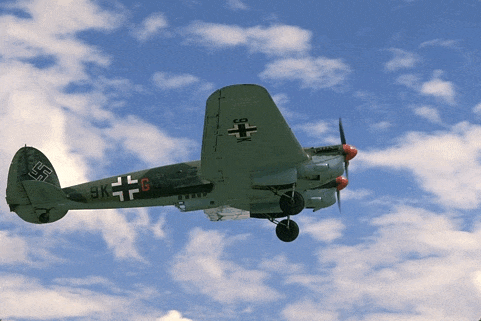
PbLite Boundary Detection
Classical edge detection algorithms, including the Canny and Sobel, look for intensity discontinuities in an image. The more recent pb (probability of boundary) boundary detection algorithm significantly outperforms these classical methods by considering texture and color discontinuities in addition to intensity discontinuities.
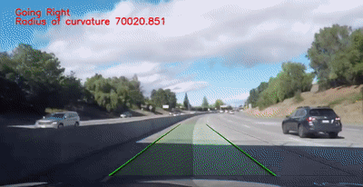
Lane Detection with Turn Prediction
To detect the lane, the region of interest in the frame in front of the vehicle is extracted. Bird's eye view of the lane in front of the vehicle is obtained and is then masked in the HSV color scheme to get the lanes in the top view. A column wise histogram is plotted to obtain the columns that contain the possible lane candidates. Once the lanes are obtained, a polygon is fitted between the detected the lanes to mark the lane. The detected lane is then re-imposed on the main frame. The turn is predicted by finding the difference of the centers of the lanes at the top and bottom of the detected lane in the bird's eye view.
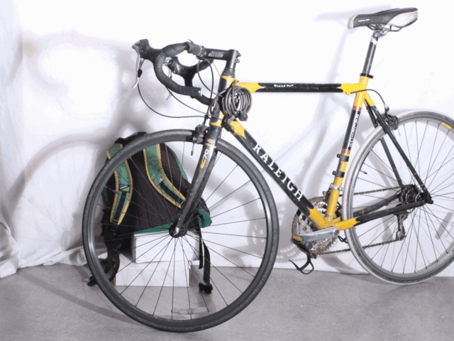
Multiview Geometry Depth Estimation
This project's goal is to compute a disparity and a depth map from two given images. Initially the fundamental matrix calculated using RANSAC. The possible rotation matrices and translation vectors are obtained from the essential matrix. The final pose matrix is found by triangulating the points and checking whether the points is behind or in front of the camera.
Histogram Equalization
The goal of this project is to have an equalized histogram and thus the new pixel intensities are computed using the cumulative distribution function (CDF). For a BGR frame the color channels are separated and for each channel a CDF is computed which results in a noisy frame but equalized histogram. To address this problem the histogram equalization is often carried out in the HSV color scheme and only on the V channel.Machine Learning Projects
Face Recognition
Principal Component Analysis (PCA)
In Principal Component Analysis the data is projected on directions that can best represent the data with minimum loss in the information and thus dimensionality reduction is achieved. In other words, we can say that by reducing the number of dimensions we still try to preserve the trends in the data. This is obtained by minimizing the squared error between the data and the projected data which is evaluates to a maximization problem whose solution is obtained by computing the eigenvector of the covariance matrix of the data.Multiple Discriminant Analysis (MDA)
Just like PCA, MDA is also a dimensionality reduction technique. The major difference between PCA and MDA is that while PCA tries to find the direction that can best represent the data, MDA finds a direction that can best possibly separate the given data. For example if we have to reduce the dimensionality of images that contain the letters "O" and "Q", PCA will try to maintain the data of the ring of the letters whereas MDA will try to distinguish the two letters by finding the line in the letter "Q". In MDA, the number of dimensions on which we can project the data can be at the most equal to the number of classes minus one.Bayes Classifier
The faces are classified by assuming gaussian distribution of the classes and estimating the maximum likelihood values of the parameters for each class which is followed by Bayes Classification. This is achieved by computing the posterior probabilities for each class given a test sample.k Nearest Neighbors
This is a simple classifier that will classify the data based on the k nearest neighbors to it. The letter "k" is used to denote that it can be any integer.Support Vector Machines
SVMs are supervised learning models that can be used for bilinear classification. Given a set of training examples, each marked as belonging to one of two categories, an SVM training algorithm builds a model that assigns new examples to one category or the other, making it a non-probabilistic binary linear classifier. This project leverages reproducing kernel hilbert spaces to solve the problem in higher dimensions where the data can be linearly separated. In this project, polynomial and RBF kernels have been used.Boosted SVM
Boosting works on the principle that many weak classifiers when combined can result in a good classifier. While combining the classifiers, the next classifiers are only provided with the data that the previous classifiers made an error with.Digit Recognition - MNIST and Transfer Learning
Support Vector Machines
In this project SVM has been implemented for the purpose of digit recognition with the help of built-in methods offered by the Scikit Learn library. The method handles multiclass classification by default and accuracy is tested by varying the hyperparameters of the model for the RBF, Polynomial and the linear kernels.Multiclass Logistic Regression
This method has been implemented with the help of Scikit Learn library which offers Logistic Regression with multiclass classification.Convolutional Neural Network
A 6 layers convolutional neural network has been implemented with the help of Tensorflow for the purpose of digit recognition. The network takes an input image of size 28 x 28 and predicts an image from the 10 different classes.Transfer Learning
The problem of limited resources whether computational or limited availability of data can be tackled with the help of transfer learning. In transfer learning, an existing CNN architecture with pre-trained weights on a large dataset is used. The convolutional layers are retained and the dense layers of the network are replaced with new layers and untrained weights. This way we only have to train the last few added layers for each epoch. In this project, MobileNet has been used with weights trained on imagenet dataset.Path Planning Projects
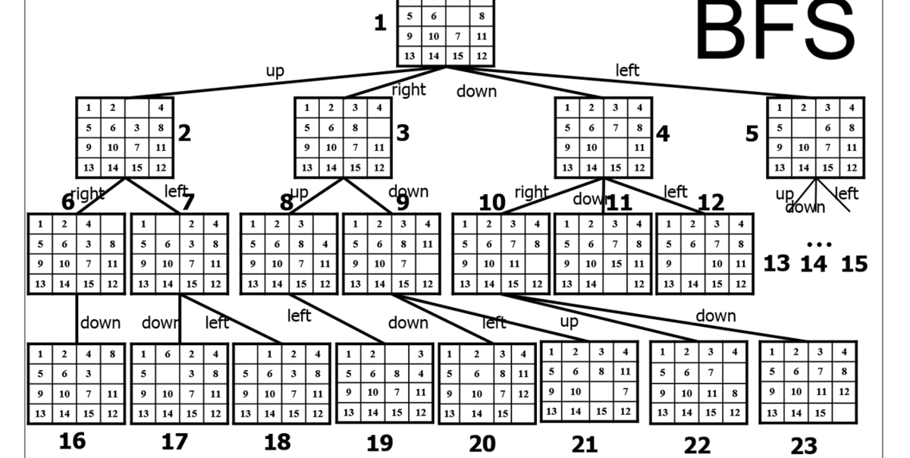
15 Puzzle Problem
This is a 15 piece puzzle solver which uses Breadth First Search method to find the solution to a given state. It also provides detailed steps required to take to reach the goal state.
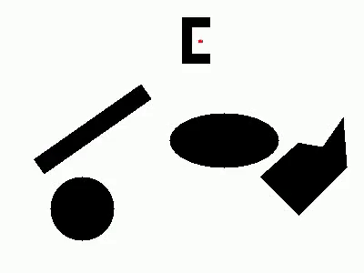
Breadth First Search
This is a planning method used to find path for a point robot so that it can navigate to the required goal while avoiding the obstacles in the area.
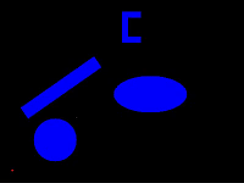
Dijkstra's Algorithm
This is planner will always find the best path (lowest cost path) for the robot to reach the goal state. It has been implemented for a rigid robot.Astar Algorithm
Astar algorithm is a greedy search algorithm that finds a good path in a very short amount of time but the path found may not always be the best path for the robot. For this project differential drive constraints have been used and a ROS package has been developed that enables Turtlebot to navigate in the world while avoiding the obstacles.
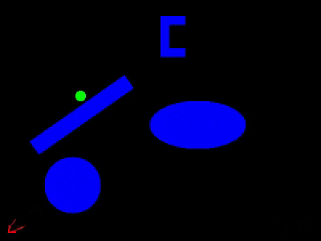
Rapidly Exploring Random Tree (RRT*)
This is a random sampling planning method that can provide the shortest possible path when the number of sample nodes approach infinity. It is an optimized version of RRT algorithm as it rewires the tree if a newly found node can reduce the cost of reaching the other nodes.Software Development Projects

Human Obstacle Detector
This project attempts to implement a Perception module for ACME Robotics using high-quality software engineering practices such as the Agile Iterative Process, Object Oriented Programming, Pair Programming and Test Driven Development. We attempt to achieve robust human detection using Histogram of Oriented Gradients (HOG) feature descriptor combined with a Support Vector Machine Model. The algorithm uses HOG features extracted from the input data to detect Humans and surround them with rectangular bounding boxes, the centers of which act as the pixel coordinates of the detected humans.
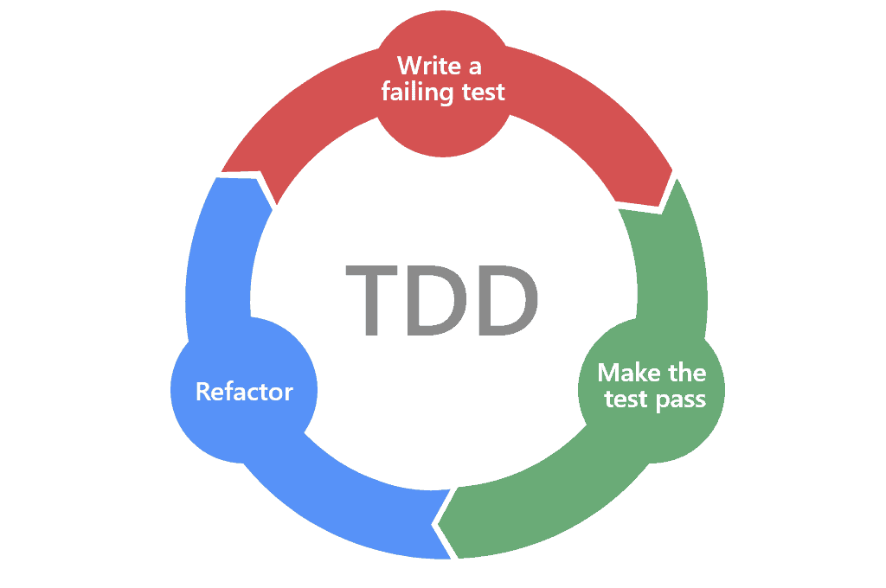
Test Driven Development
This project is carried out in a pair of 2 teams where the goal is to simulate test driven development on a small project of implementing a PID controller. In first part the team 1 will implement the stub for a PID controller and write tests for it which fail initially. In second part of the project, the second team implements the controller and ensures the tests still pass.ROS Beginner Tutorials
This project explores ROS with basic tutorials for services, tf transforms, services and unit testing combined with gitTeam Taurus at Vishwakarma Institute of Technology
As the head of Engine and Transmission subsystem, I was responsible for designing the complete drive train for the kart which includes responsibilites for selecting an engine for the kart, design of shaft, wheel hubs, sprocket considering static and dynamic loads and evaluating the final reduction ratio considering, traction limited acceleration. Additionally, designing a mechanism for clutch actuation and fuel supply were also my responsibilites.